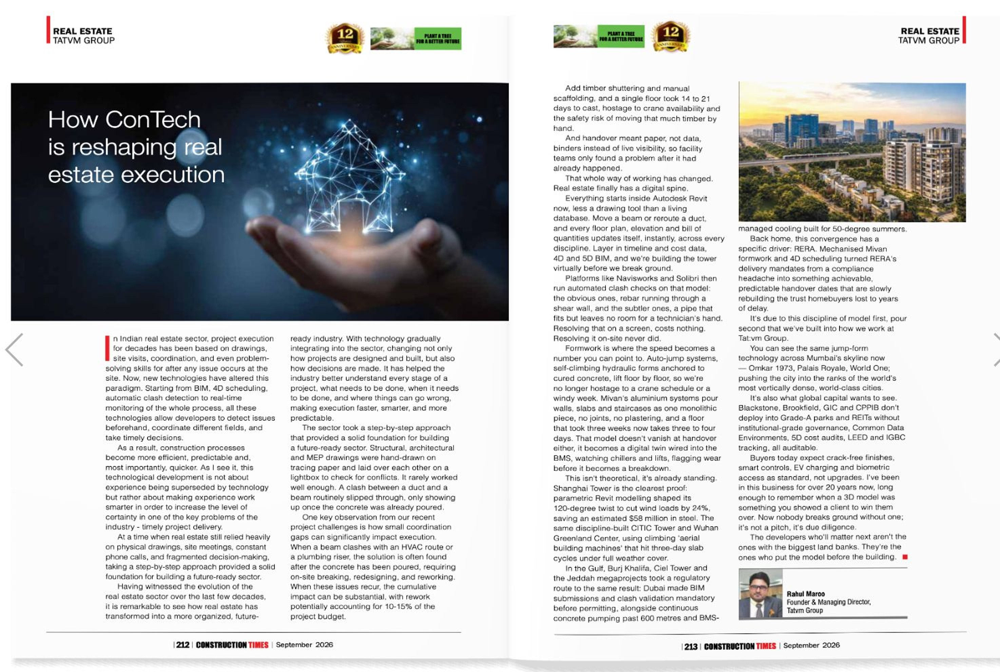

For most homebuyers and housing societies, the biggest worry in real estate is not the design or the price. It is whether the building will actually be finished on time, to the promised quality. In a city like Mumbai, where plots are tight, approvals are layered and families often move out while their old building is rebuilt, a delay of even a few months has a real cost.
This is where construction technology in real estate, often shortened to ConTech, is starting to make a difference. It is not one gadget or one app. It is a set of digital tools and modern building methods that help developers plan better, build faster and show buyers exactly where a project stands.
Short answer: ConTech is changing real estate execution by moving problems from the site to the screen. Clashes are caught in a 3D model before concrete is poured, progress is tracked daily instead of monthly, faster formwork systems cut the time per floor, and buyers get regular, verifiable updates. The result is fewer surprises, less rework and more timely project delivery.
What is ConTech?
ConTech covers any technology used to design, plan, build or manage a construction project. In real estate it usually falls into four groups:
- Design and planning: Building Information Modelling (BIM), 3D and 4D models, digital site surveys.
- Site execution: aluminium formwork (Mivan), precast elements, drones, 360-degree site cameras.
- Project control: cloud-based scheduling, cost tracking, quality checklists and material tracking.
- Customer side: construction progress updates, virtual walkthroughs and digital documentation.
1. BIM: building the project twice, once digitally
With BIM in construction, the architect, structural engineer and services consultants work on a shared 3D model instead of separate 2D drawings. If a beam blocks a drainage line or a duct runs into a column, the software flags it before anyone is on site. Fixing a clash on screen costs minutes. Fixing it after the slab is cast costs days and money.
Adding the schedule to the model (often called 4D) shows how the building will rise week by week, which helps plan crane positions, material deliveries and labour on a cramped city plot.
2. Faster structures with Mivan and precast
Many Mumbai high-rises now use aluminium formwork, popularly known as Mivan construction technology. Walls and slabs are cast together in one pour using reusable aluminium panels, so a typical floor can be completed in a much shorter cycle than with conventional brick-and-beam construction. The finish is also more uniform, which reduces plastering and later leakage issues.
Precast elements such as staircases, lift walls or facade panels are made in a factory and fixed on site. Factory conditions mean better quality control and less dust, noise and debris around neighbouring buildings, which matters a lot in dense areas.
3. Drones and site cameras for real visibility
Drones can survey a plot in a few hours, produce accurate measurements and capture progress photos from angles that are hard to reach. Fixed 360-degree cameras record the site every day. Together they give project managers a reliable record of what was built, when, and how it compares with the plan.
Drone site monitoring in construction also means senior management can base decisions on what is actually on site, not on a weekly report that may already be out of date.
4. One digital system for schedule, cost and quality
On a traditional site, schedules sit in one spreadsheet, purchase orders in another and quality checks on paper. Cloud project management platforms bring these together. Site engineers update progress from a phone, inspections are logged with photos, and delays show up as soon as they start rather than at the month-end review.
Digital material tracking also helps. When cement, steel and finishing materials are ordered against the schedule, there is less waiting for materials and less wastage from over-ordering.
5. Safety and quality, measured rather than assumed
Sensors can monitor concrete curing, temperature and structural movement. Digital permit-to-work systems and attendance records make it easier to check who is on site and whether safety procedures were followed. Quality checklists that cannot be closed without a photo make it harder for steps to be skipped.
6. Transparency for buyers and societies
Under MahaRERA, developers already have to share project details and progress. ConTech makes this easier and more meaningful. Photo and video updates, digital payment schedules linked to completed milestones, and virtual walkthroughs of the finished home let buyers see their investment take shape without visiting the site every month.
Why ConTech matters even more in redevelopment
Redevelopment and SRA projects in Mumbai come with pressures that a greenfield project does not have:
- Existing residents are living in temporary homes or receiving rent, so every month of delay adds cost and stress.
- Plots are small and surrounded by occupied buildings, leaving little room for storage or heavy machinery.
- Societies want clear, regular updates because their members' homes are at stake.
- Approvals and plans can change, and the design has to adapt quickly without losing time on site.
This is why technology in redevelopment projects pays off. Planning in BIM, using faster formwork and sharing digital progress reports directly address these issues. If your society is considering building redevelopment in Mumbai, ask the developer how they plan and track execution, not just what the final building will look like. Our guides on SRA projects and safer, future-ready building redevelopment explain the wider process.
The challenges are real too
Construction technology in India is growing fast, but ConTech is not a magic fix. Tools cost money, site teams need training, and the benefits only come when the architect, contractors and developer all work on the same system. A drone video is useless if nobody acts on what it shows. The developers who gain the most are the ones who change how decisions are made, not just which software they buy.
Questions to ask a developer about execution
- Is the project designed and coordinated in BIM or a shared 3D model?
- What construction system is used for the structure (Mivan, precast or conventional)?
- How often will we get progress updates, and in what form (photos, video, reports)?
- Are payment milestones linked to verifiable construction stages?
- What is the MahaRERA registration number and the committed possession date?
- What is the developer's delivery record on past projects?
How Tat:vm approaches execution
At Tat:vm, we see real estate project execution as the part of real estate that builds trust. As a Mumbai developer focused on redevelopment and new projects, we know families and societies judge us by how reliably we deliver, not only by what we promise. You can read more about Tat:vm and our approach to planning, quality and transparency.
Our current work includes residential and mixed-use developments, among them a commercial project in Ghatkopar West. Explore our projects, read about real estate development in Mumbai, or if you are planning a redevelopment, speak to our team.
As Featured in Construction Times
This article is based on Raahul Maroo's column in the September 2026 issue of Construction Times (pages 212–213). Click the pages below to open them and zoom in.


Construction Times, September 2026, pages 212–213. Click to enlarge.
Frequently Asked Questions
What is ConTech in real estate?
ConTech, or construction technology in real estate, is the use of digital tools and modern building methods such as BIM, drones, aluminium formwork and cloud project management to design, build and manage real estate projects.
How does construction technology help deliver projects on time?
It catches design clashes before work starts, shortens the time needed per floor, tracks progress daily and flags delays early, so problems are fixed before they push back the possession date.
What is Mivan construction technology?
Mivan is an aluminium formwork system in which walls and slabs are cast together using reusable panels. It speeds up construction and gives a more uniform, durable finish.
Is ConTech useful in redevelopment projects in Mumbai?
Yes. Redevelopment sites are small and surrounded by occupied buildings, and residents are waiting to move back. Better planning, faster construction and regular progress updates reduce delays and keep societies informed.
How can buyers track construction progress?
Buyers can check the project's MahaRERA page and ask the developer for regular photo or video updates, with payment milestones linked to completed construction stages.
Be Part of Our Sustainable Journey
Explore our award-winning projects and discover homes built with sustainability, care, and vision.
Explore Our ProjectsRelated News